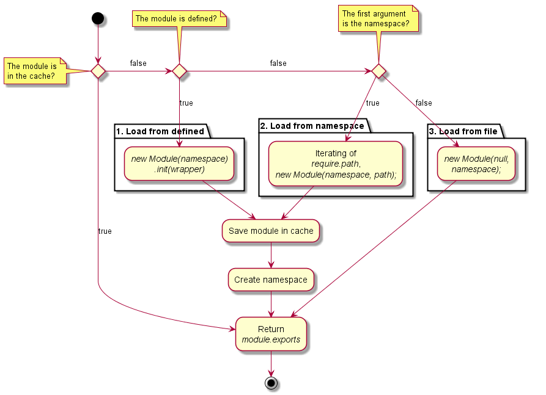
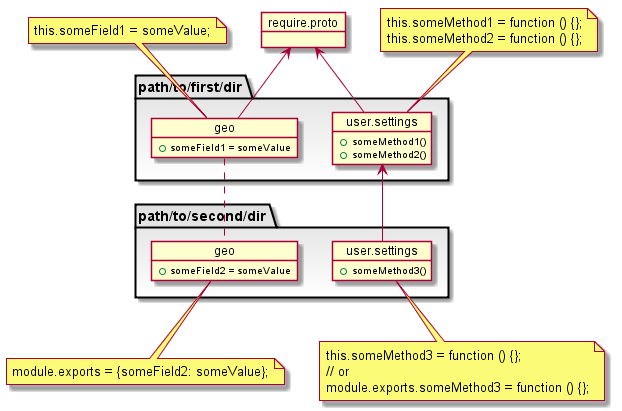

Methods
-
require(namespace) → {Object}
-
Кастомная реализация функции require для CommonJS-модулей с поддержкой окружений XScript и Client-side. See README.
Алгоритм работы require:

Схема наследования модулей:
Parameters:
Name Type Description namespaceString Пространство имен модуля или путь к JavaScript-файлу. Пространство имен представляет собой строку имён, разделённых точкой. Имя должно начинаться с буквы, затем могут идти символы латинского алфавита, а так же знаки "-" и "_". Если переданный аргумент не является пространством имен, он воспринимается как путь к файлу, по которому следует загрузить модуль. - Source:
- Tutorials:
Properties:
Name Type Argument Default Description pathArray <optional>
[] Массив путей с директориями, в которых будут искаться файлы модулей на серверной стороне. Каждый путь представляет собой уровень переопределения, выстраивающий соответствующую цепочку наследования модулей из одного пространства имен (см. схему наследования). extensionString <optional>
'js' Расширение файлов модулей. Подробнее: Module#load. packageNameString <optional>
'package.json' Имя JSON-файла, содержащий информацию о модуле. В данный момент используется только свойство main. Подробнее: Module#load. fileObject <optional>
xscript.file API XScript-а для работы с файловой системой. Существует только на серверной стороне. prototypeObject Общий прототип объектов (Module#exports) (см. схему наследования). define(namespace,wrapper)Function Регистрирует модуль по указанному пространству имен в первом параметре. Вторым параметром должена быть функция, которая принимает 4 аргумента (см. Module#compile) и содержит в себе тело модуля. Вызов метода require.define не инициализирует модуль (функция wrapper не вызывается). Инициализация происходит в момент первого обращения к модулю через вызов require. Все аргументы обязательны. Throws:
-
Ошибка получения модуля.
- Type
- RequireError
Returns:
Объект Module#exports.- Type
- Object
Example
// Загрузка модуля из разных уровней переопределения: require.path = ['/path/to/first/dir/', './path/to/second/dir']; require('name.space'); // В этом случае объект Module#exports, из модуля "path/to/second/dir/names.space.js", // будет наследовать от объекта Module#exports, из модуля "/path/to/first/dir/names.space.js". // Доступ к модулям из глобального пространства имен: require('some.name.space'); $XM.some.name.space; // объект Module#exports. // Регистрация модуля в браузере: require.define('name.space', function (module, exports, require, basedir) { // Тело модуля });